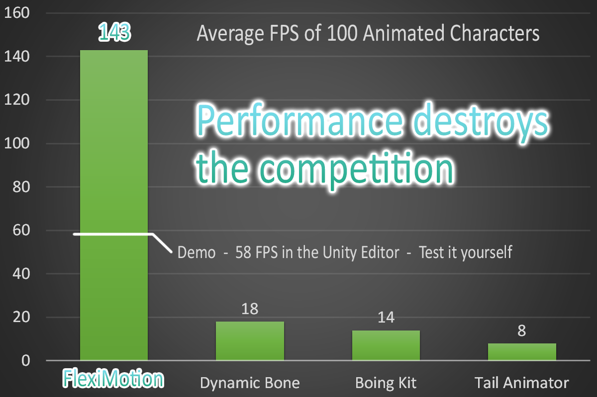
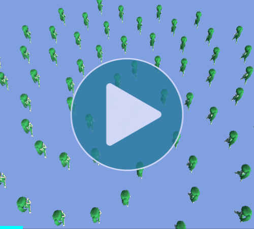
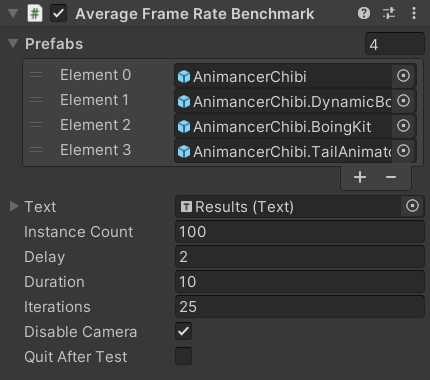

This sample measures the average frame rate of FlexiMotion (or another system) over time.

It works by instantiating a number of copies of a given prefab, waiting for a short delay for the performance to stabilize, and then counting the number of updates that occur over a period of time.
FlexiMotion only includes one sample character prefab, but you can assign any prefab you want to test and the Try it Yourself section has a package to help you compare it against any other systems you have.
Test Environment
The test was conducted in a Runtime Build with the benchmark settings as shown in this image.
The results were captured on a laptop with the following specs:
- Processor: i7-10750H ~2.6 GHz
- RAM: 16 GB
- Video Card: NVIDIA GeForce GTX 1650 - 4 GB
Demo
The average frame rate of the FlexiMotion Demo is ~60% lower than the Full version due to several factors:
- The Demo is Editor-Only, so it was tested in the Unity Editor.
- Testing the Full version in the Unity Editor gives ~114 FPS, so the Demo result (58 FPS) is only ~50% lower when they're both tested in the Unity Editor.
- The Demo code is inside a pre-compiled DLL which means it can't be optimized by the Burst Compiler.
- The Demo DLL is obfuscated to prevent decompilation, which unfortunately also reduces performance.
- Note that the Full version also includes a DLL with the same name, but it contains no code and is only there to overwrite the Demo DLL if you import the Full version over the Demo.
Try it Yourself
You can run this benchmark yourself by downloading the Free FlexiMotion Demo. Note that as mentioned above, the Demo is significantly slower than the Full version (though still much faster than other systems).
If you have any of the other systems shown in the graph, you can download the FlexiMotion.Compatibility.unitypackage from here. It contains the prefabs used to generate the results for the graph.
The compatibility package also contains scripts to easily convert the data from a FlexiMotion component to a rough equivalent in each of the other systems.
- Start by importing FlexiMotion and any of the other systems you have available into your project.
- Download and import the FlexiMotion.Compatibility.unitypackage.
- Go to
Edit -> Project Settings -> Playerand add the Scripting Define Symbol listed in the following table for each system you have:
| System | Scripting Define Symbol |
|---|---|
| Boing Kit | FLEXI_MOTION_BOING_KIT |
| Dynamic Bone | FLEXI_MOTION_DYNAMIC_BONE |
| Tail Animator | FLEXI_MOTION_TAIL_ANIMATOR |
- Then you can go to any object or prefab with a
FlexiMotioncomponent and use its Context Menu Functions to copy the data to another system. This will add the appropriate components from that system and configure them in a similar manner.

If you have any suggestions for how the conversion scripts could be improved to give better performance in the other systems or behaviour closer to FlexiMotion, please use any of the contact methods listed on the Help page.